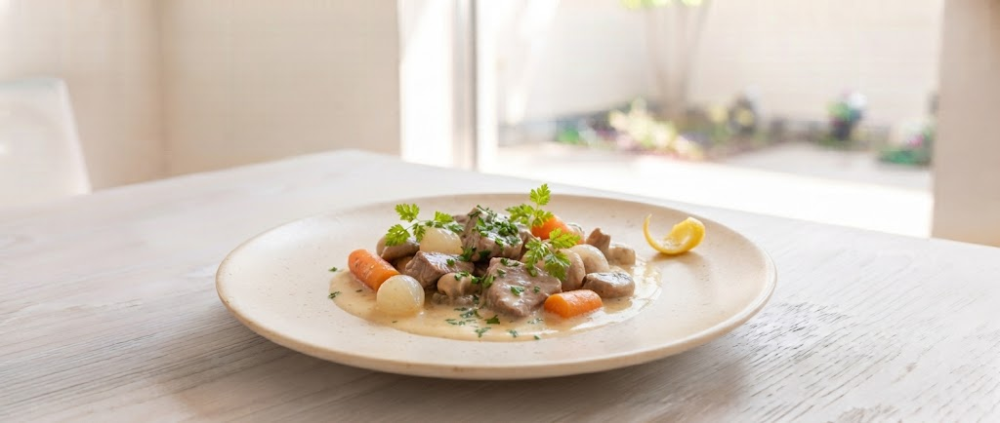
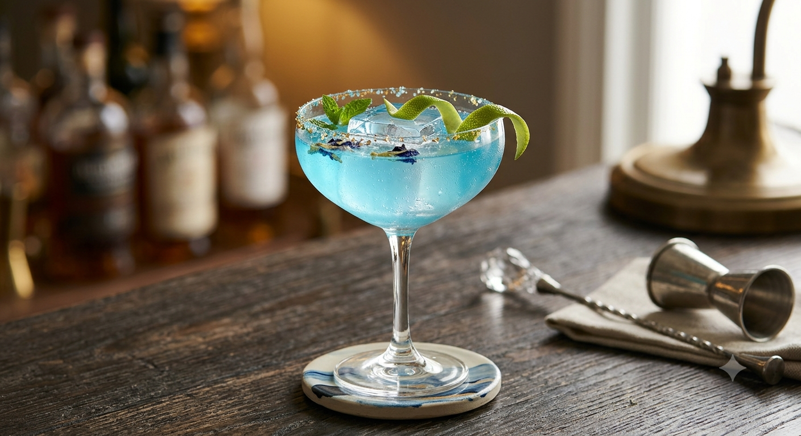
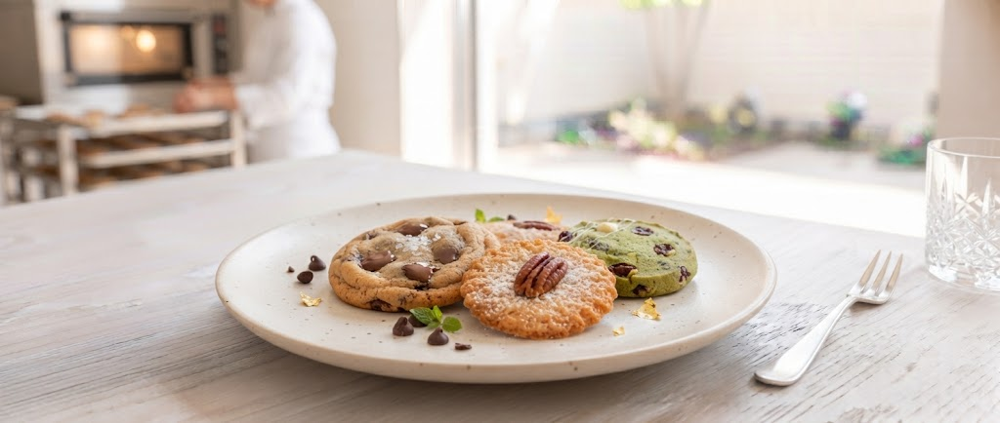
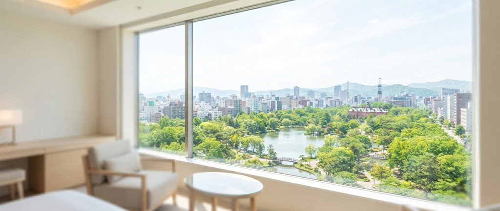

The Art of Gastronomy
Bistro La Provence / Sapporo
プレミアホテル中島公園札幌の5階。エレベーターの扉が開くと、そこには中島公園の緑（あるいは白銀の景色）と、食欲をそそる芳醇な香りが広がっています。私たちが目指すのは、ホテルの上質さを持ちながら、ビストロのように親しみやすい場所。
看板メニューの「豚肉の白ワイン煮込み」は、料理人がじっくりと時間をかけ、繊維一本一本に旨味を染み込ませた自信作。素材の良さと手間の大事さを、一皿一皿に込めてお届けします。

Specialty
低温で12時間。シェフのこだわりが詰まった煮込み料理は、ナイフを入れた瞬間の柔らかさが魅力を語ります。
「好きなものを、好きなだけ」という贅沢を。当店のビュッフェは、混雑を避けるためサラダをあらかじめカップに盛り付けるなど、スマートなスタイルを提案しています。

ランチタイムにはスパークリングワインもビュッフェに。昼下がりのひとときをより優雅に演出します。

レストランで焼き上げる自家製クッキー。香ばしい香りが漂う店内は、まるでお菓子の工房のよう。

窓の外に広がるパノラマビュー。四季折々の表情を見せる公園は、最高のご馳走のひとつです。
素材のよさと手間の大事さを感じる秀逸な料理でした。ビュッフェのスープカレーも絶品で、ついつい食べ過ぎてしまいました。
— Male Guest / Friday
サラダがカップに入っているのが画期的。メインの甘鯛の鱗焼、サクサクで身はふっくら、最高に美味しかったです。
— Female Guest / with Friends
「あったらいいな」をカタチに。ラ・プロヴァンスが準備中の、食と空間を楽しむ新しいプロジェクトです。
シェフ自らが各テーブルを巡り、素材の生産背景や調理法、ワインペアリングの極意を直接解説。五感と知性で味わう月1回限定のプレミアムサロンイベント。
ホテルの外壁沿いにオープンする特設ウィンドウ。焼き立てのクロワッサンや客室パティシエ特製タルトを、お散歩ついでに気軽にテイクアウトしていただけます。
〒064-0810 札幌市中央区南10条西6丁目1-21
プレミアホテル中島公園札幌 5F
011-804-8392
ランチタイム：12:00 〜 14:00
定休日：無休
Click to visit our reservation page